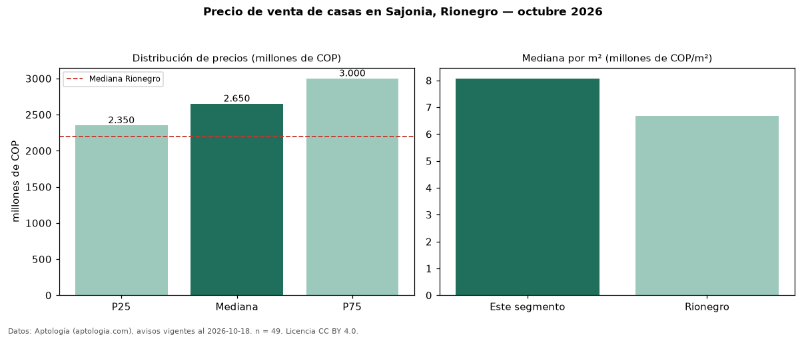

Precio de venta de casas en Sajonia, Rionegro — octubre 2026
COP 2,65 mil millones es el precio mediano de casas en venta en Sajonia, Rionegro (n = 49 avisos). Frente a la mediana de Rionegro para casas (COP 2,20 mil millones), queda 20 % por encima. Por metro cuadrado, la mediana es COP 8,07 millones/m² (n = 37 avisos con área), 21 % por encima de Rionegro (COP 6,69 millones/m²). Con el precio por m² de arriendo del mismo segmento (COP 48.193/m² al mes), la rentabilidad bruta implícita es 7,2 % anual (aproximación con medianas de ofertas distintas). El área mediana anunciada es 328 m². El segmento con más oferta es el de 3 o más habitaciones (49 avisos, mediana COP 2,65 mil millones). La administración mediana declarada es COP 1,25 millones al mes (n = 16). Por precio mediano es el puesto 6 de 12 barrios de Rionegro con al menos 30 avisos de casas en venta (COP): en la franja media. Datos: Aptología (aptologia.com), CC BY 4.0 — https://www.aptologia.com/casas-en-venta/rionegro/sajonia. Archivos: PDF, CSV con las cifras y gráfica PNG.

| Avisos únicos | 49 |
|---|---|
| Percentil 25 | COP 2.350.000.000 |
| Mediana | COP 2.650.000.000 |
| Percentil 75 | COP 3.000.000.000 |
| Mediana por m² | COP 8.071.639 |
Fuente: avisos vigentes de portales inmobiliarios recopilados por Aptología, deduplicados (mínimo 30 avisos únicos por celda). Precios pedidos, no cerrados. Fecha: 2026-10-18.